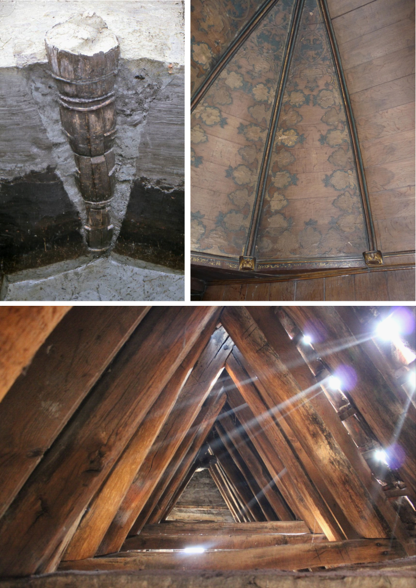
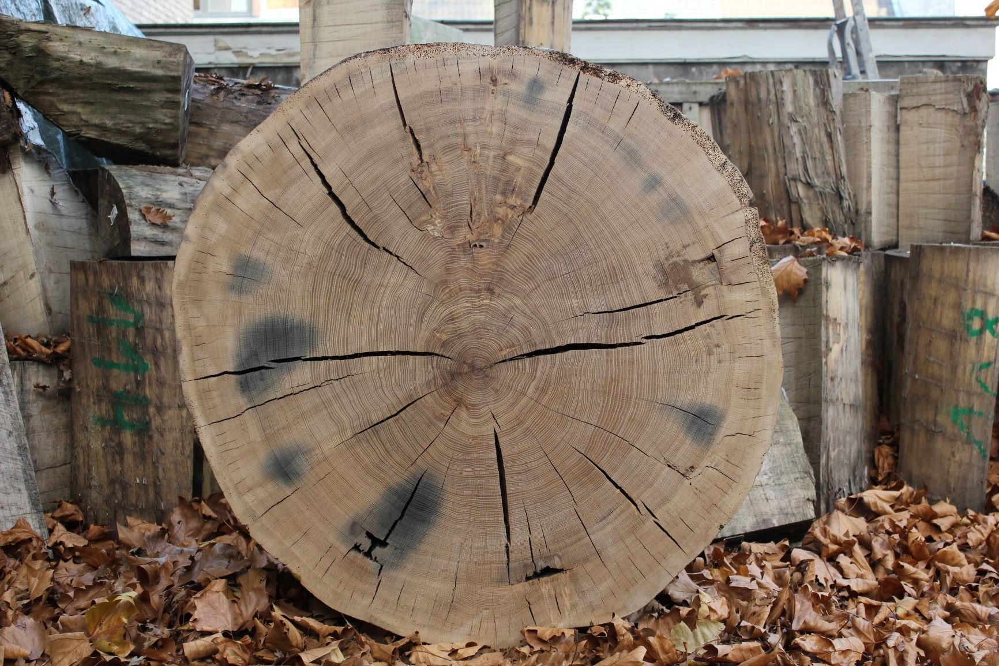

3.1 Dateren
De meest populaire toepassing van de dendrochronologie binnen het erfgoedonderzoek is ongetwijfeld het dateren van houten constructies en voorwerpen. Dit kan zowel worden toegepast op archeologisch, bouwkundig als roerend erfgoed. Vanuit methodologisch standpunt is er geen verschil tussen het analyseren van hout uit de bekisting van een Romeinse waterput, balken in een middeleeuwse dakkap, een houten sculptuur of schilderijpanelen. Het zijn immers allemaal objecten gemaakt uit stukken hout, waar groeiringen op te zien zijn. Bij een daterend dendrochronologisch onderzoek wordt de veldatum van een boom zo precies mogelijk bepaald. De veldatum is het kalenderjaar waarin een boom werd gekapt, of in het geval van subfossiele bomen - dit zijn bomen die zonder ingrijpen van de mens zijn afgestorven en bewaard gebleven in de ondergrond - het jaar waarin de boom is afgestorven.
Het is met andere woorden niet het object of de structuur zelf die wordt gedateerd, maar het afsterven van de boom waarvan het hout afkomstig is. Aangezien er vaak een directe relatie is, of kan vermoed worden, tussen het kappen van een boom en het gebruik van zijn hout, heeft de datering van het afsterven van de boom een duidelijke relatie met het tijdstip waarop de houten structuur of het object werd gemaakt. Hergebruik van ouder bouwhout, latere herstellingen met ‘jonger’ hout of het jarenlang laten drogen van houten panelen vooraleer ze in gebruik te nemen, moet waar nodig uiteraard ook in rekening gebracht worden.
Een datering van meerdere objecten of structuren binnen een zelfde archeologische site, of meerdere fasen in een historisch gebouw kan uitsluitsel geven over de gelijktijdigheid of onderlinge positie in de tijd van deze structuren of sporen. Ook bij een stuk hout zonder exacte dendrochronologische datering kan het opmeten van het jaarringpatroon een antwoord bieden op de vraag of bepaalde houten elementen op hetzelfde tijdstip werden gemaakt. In sommige gevallen zijn de overeenkomsten in het groeipatroon immers zo markant dat kan worden besloten dat houten elementen uit een zelfde boom zijn gehaald.
Een dendrochronologische datering kan in sommige gevallen ook de authenticiteit van objecten bevestigen of ontkrachten. Een paneelschilderij of viool waarvan bepaalde elementen (bv. een individuele plank of het bovenblad) door een dendrochronologische analyse na het overlijden van de artiest of instrumentenbouwer worden gedateerd, kan onmogelijk door die persoon zijn gemaakt.
3.2 Herkomst en handel
Naast een exacte datering slaagt een dendrochronologisch onderzoek er dikwijls ook in om een idee te geven over het herkomstgebied van het hout - dit is de regio waar de boom oorspronkelijk is gegroeid. Bij een herkomstbepaling (Eng.: dendro-provenancing) wordt het groeipatroon van een stuk hout vergeleken met referentiekalenders uit verschillende streken. Op die manier wordt nagegaan met welke regionale referentiekalenders de beste overeenkomst optreedt. Regionale referentiekalenders zijn opgebouwd met hout afkomstig uit één welbepaalde regio, maar de omvang van een regio is daarbij wel sterk variabel. Zo bestaan er kalenders die zijn samengesteld met gedateerde groeiringreeksen uit een groot gebied zoals Zuid-Duitsland, terwijl andere enkel hout uit één bepaalde stad (bv. Gdansk, Polen) of uit een kleine regio (bv. Vlaanderen) vertegenwoordigen. Door het herkomstgebied te bepalen krijgen we meer inzicht in de vroegere handel in (bouw)hout. Dit is niet onbelangrijk voor een regio als Vlaanderen waar vanaf de middeleeuwen aanzienlijke hoeveelheden kwaliteitsvol hout werden geïmporteerd. Deze toepassing van het dendrochronologisch onderzoek laat toe om het onderscheid te maken tussen lokaal en geïmporteerd hout. Dit laatste is zeker van belang bij vondsten die niet noodzakelijk ter plaatse zijn gemaakt. Denken we bijvoorbeeld aan tonnen die als verpakkingsmateriaal werden gebruikt, (beschilderde) panelen, meubilair of sculpturen, allemaal goederen die over grote afstanden konden verhandeld worden. Maar ook een (middeleeuwse) dakkap is vaak opgetrokken uit balken die werden aangevoerd uit verafgelegen en meer bosrijke gebieden. En zeker bij scheepshout is de vindplaats van een wrak of scheepsonderdeel zelden dezelfde plek waar het schip werd gebouwd.

3.3 Bosbeheer en exploitatie
Het aandeel van lokaal versus geïmporteerd hout kan ook een indicator zijn voor de natuurlijke omgeving in het verleden (beschikbaarheid van lokaal hout) en veranderingen daarin (ontbossing). Daarnaast zijn in archeologisch hout, historisch bouwhout of subfossiele boomstammen soms trends of verstoringen in het jaarringpatroon op te merken die wijzen op plots veranderde groeiomstandigheden (langdurige overstroming, stijging grondwatertafel, …), calamiteiten (bosbrand) of ingrepen van de mens (regelmatige snoei, hakhoutbeheer, …). Daardoor kan dendrochronologisch onderzoek ook een belangrijke bijdrage leveren aan de reconstructie van de samenstelling, ontwikkeling en exploitatie van de vegetatie in het verleden. Hierbij wordt het dendrochronologisch onderzoek best gekoppeld aan ecologische informatie afgeleid uit archeobotanisch (houtsoortidentificatie, palynologie, identificatie van zaden en vruchten, …), archeozoölogisch (insectenresten, …) en/of bodemkundig onderzoek.
Aangezien zowel de leeftijd van de bomen op het moment dat ze omgehakt werden kan afgeleid worden (of benaderd) als de breedte van de jaarringen, krijgt men zo een beeld van de groeisnelheid en ouderdom van de bomen. Snelgegroeide, jonge bomen komen mischien wel uit een (jong of herstellend) bos met een open structuur waar bomen onderling nog niet al te sterk met elkaar wedijveren voor licht en nutriënten, of waren aangeplant langs een akker of weiland, of kenden een door de mens gestuurd bosbeheer (bvb. hakhout, middelhout, …). Traag gegroeide en oude bomen wijzen dan weer op een dicht, gesloten en donker bos waar de kruinen van de bomen met elkaar in competitie staan om voldoende licht te ontvangen. Let wel, de trage groei (smalle ringen) slaat vooral op de diktegroei van de stam en zegt niet noodzakelijk meer over de hoogte van de bomen.
3.4 Levende bomen
Ook bij levende vegetatie met erfgoedwaarde - denken we aan monumentale bomen - kan dendrochronologie een antwoord bieden op een aantal vragen. De meest evidente toepassing is het bepalen van de leeftijd van een (monumentale) boom. De huidige toestand en vitaliteit van een levende, monumentale boom is daarbij van groot belang. Veel oude bomen ontwikkelen op hoge leeftijd immers kernrot, waarbij het hout in de kern van de boom langzaam wegrot. Dot zorgt ervoor dat in dit binnenste deel van de stam de jaarringen niet meer kunnen geregistreerd worden. De leeftijdsbepaling zal dan een inschatting inhouden van het aantal weggerotte jaarringen.
Een grondige analyse van het groeiringpatroon kan ook meer duidelijkheid scheppen over het vroegere beheer van de boom: bijvoorbeeld het regelmatig snoeien of knotten. Het intensief en soms regelmatig herhaald snoeien van takken zorgt er voor dat de kruin van een boom beperkt blijft en daardoor ook minder bladeren vormt. Dat beperkt dan weerd de opname van \(CO_2\) en - via fotosynthese - dus ook de aanmaak van de basiselementen waaruit nieuwe houtcellen worden aangemaakt. De boom kan de groeiseizoenen die volgen op een intensieve snoei daardoor minder nieuw hout aanmaken en vormt dan een aantal smallere ringen, die we kunnen herkennen in het jaarringpatroon.

3.5 Klimaat
Daarnaast zijn jaarringreeksen ten slotte ook te beschouwen als archieven van klimatologische gegevens. De groei van bomen wordt immers voor een deel gestuurd door het heersende klimaat en de schommelingen in temperatuur en neerslag van jaar tot jaar. Onderzoek naar de relatie tussen klimaatsvariabelen (metingen van temperatuur, neerslag, …) en jaarringkarakteristieken (breedte van de jaarringen, verschillen in densiteit, …) noemen we dendro-klimatologie. Indien een relatie wordt gevonden tussen een jaarringvariabele en één of meerdere klimaatsvariabelen zoals maandelijkse neerslag, gemiddelde temperatuur of een droogte-index, kunnen lange jaarringkalenders gebruikt worden om het klimaat in het verleden te reconstrueren.
Een dergelijke analyse is echter enkel mogelijk met een grote dataset aan klimaatgevoelige jaarringreeksen. Dit laatste is dikwijls een probleem in de Lage Landen, met een gematigd zeeklimaat, waar de groeiomstandigheden voor bomen zelden limiterend zijn.
Recent ontwikkelde technieken, waarbij de aanwezige zuurstofisotopen in jaarringen worden gemeten, hebben het potentieel om op termijn klimaatreconstructies mogelijk te maken in onze regio, gebaseerd om lokale jaarringreeksen.